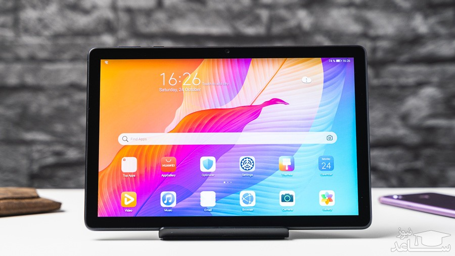

DigiNews
DigiNews
تمامی حقوق این سایت برای دیجی نیوز محفوظ است. نقل مطالب با ذکر منبع بلامانع است.
copy Right© 2022 DigiNews News Agancy, All rights reserved

بررسی میت پد T10 هواوی
تبلت میت پد تی ۱۰ هواوی، محصولی ارزانقیمت که بیشتر برای انجام کارهای سبک و ساده مناسب است و گزینهای ایدهآل برای دانشآموزان بهشمار میآید.
شیوع ویروس کرونا باعث رشد فروش محصولاتی مانند گوشیهای هوشمند و کامپیوترهای شخصی و حتی تبلتها شد. خانهنشینی مردم در سرتاسر دنیا و لزوم حضور بیشتر در فضای آنلاین باعث شد که دانشآموزان، دانشجویان و حتی افرادی که به محصولی با صفحهنمایشی بزرگتر از گوشی نیاز دارند، به فکر خرید تبلت باشند.
بازار تبلتها هم مانند بازار گوشی های هوشمند از مدلهای متنوع با قیمتهای متفاوت پر شده است؛ از آیپد پرو و سرفیس پرو با قیمتهای نجومی گرفته تا تبلتهای ارزانقیمت اندرویدی. چنین تنوعی شاید انتخاب را برایتان دشوار کند؛ اما چنانچه بهدنبال محصول نسبتا جدیدی هستید که قیمت زیادی هم نداشته باشد، احتمالا به هواوی میت پد تی ۱۰ برمیخورید.
میت پد تی ۱۰ برای انجام کارهای روزانه بسیار مناسب بهنظر میرسد و سرعت قابل قبول آن در انجام کارهای سبک تجربهی رضایتبخشی را برای کاربران خلق میکند. اگر به فکر خرید تبلت ارزانقیمت هستید، پس با بررسی هواوی میت پد تی ۱۰ همراه زومیت باشید.
طراحی و کیفیت ساخت میت پد تی 10
تبلت میت پد تی ۱۰ ظاهری مانند اکثر تبلتهای موجود در بازار دارد. صفحهنمایش ۹٫۷ اینچی محصول جدید هواوی حاشیههای باریکی ندارد و در ابعاد ۱۵۹ میلیمتر در ۲۴۰٫۲ میلیمتر در ۷٫۸۵ میلیمتر ساخته است. میتپد تی ۱۰ با وزن ۴۵۰ گرمیاش جزو محصولات نهچندان سبک بازار بهحساب میآید؛ بهطوریکه در استفادههای مداوم، سنگینی وزن آن را احساس خواهید کرد.
باتوجه به محل قرارگیری دوربین سلفی و نسبت تصویر ۱۶:۱۰ نمایشگر، بهتر است از میت پد تی ۱۰ در حالت افقی استفاده کنید. اگر میت پد تی ۱۰ را در حالت افقی بهدست بگیرید، روی لبهی بالا کلیدهای پاور و تنظیم صدا را مشاهده میکنید. در کنار این کلیدها دو میکروفن هم دیده میشوند. روی لبهی سمت راست، محل قرارگرفتن سیمکارت و کارت حافظه، جک ۳٫۵ میلیمتری خروجی صدا و بلندگو بهچشم میخورند؛ درحالیکه کانال دیگر اسپیکر در لبهی سمت چپ قرار دارد. لبهی پایینی دستگاه از هیچگونه پورت یا درگاهی میزبانی نمیکند.
قاب پشتی میت پد تی ۱۰ از دو قسمت تشکیل شده که بخش زیادی از آن فلزی و بخش دیگر که بهصورت نوار باریکی کل لبهی بالایی را دربرگرفته، پلاستیکی است، این نوار پلاستیکی نقش بهبود آنتندهی در اتصال Wi-Fi و موبایل را برعهده دارد. میت پد تی ۱۰ ساختار محکمی دارد؛ اما پوشش براق قاب فلزی آن آثار انگشت و چربی را بهخود جذب میکند.
تبلت میت پد تی ۱۰ ظاهر پیچیدهای ندارد و نوآوری خاصی در آن دیده نمیشود. ظاهر کلاسیک یک تبلت را مشاهده میکنید که چندان بد هم از کار درنیامده است و از آنجایی که با یک تبلت ارزانقیمت سروکار داریم، نباید انتظار ظاهری خیلی مدرن با کیفیت ساخت بالاتر را از میت تی ۱۰ داشته باشید.
DigiNews
DigiNews
تمامی حقوق این سایت برای دیجی نیوز محفوظ است. نقل مطالب با ذکر منبع بلامانع است.
copy Right© 2022 DigiNews News Agancy, All rights reserved